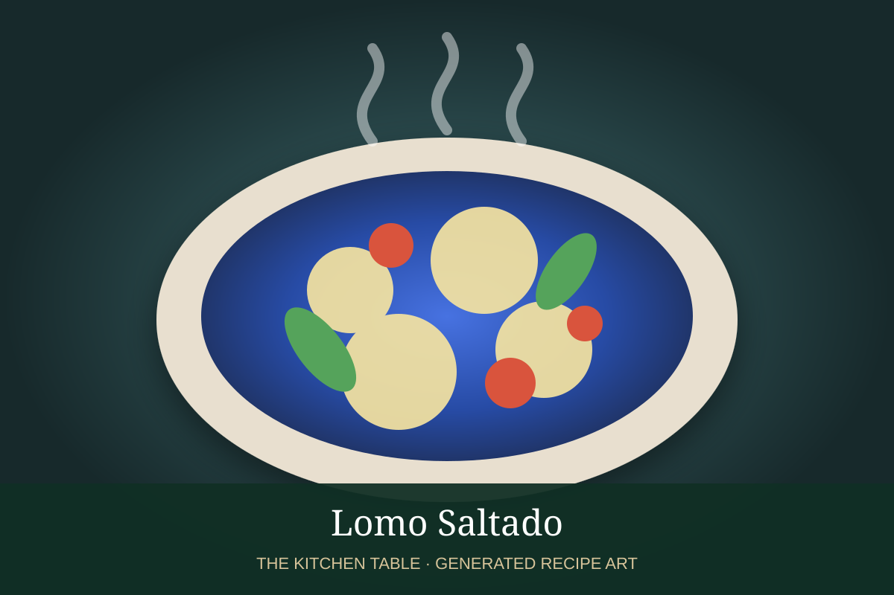

← Back to all recipes
BEEF · PERUVIAN
Lomo Saltado
Peru’s iconic chifa stir-fry of seared beef, red onion, tomato, ají amarillo, soy sauce, vinegar, fries, and rice.
35 minServes 4

Photo: Top Inka Travel
Ingredients
- 1 1/2 lb sirloin or tenderloin, cut into strips
- 2 tbsp neutral oil
- 1 large red onion, cut into thick wedges
- 2 Roma tomatoes, cut into wedges
- 1 ají amarillo, sliced, or 1 tbsp ají amarillo paste
- 3 tbsp soy sauce
- 2 tbsp red wine vinegar
- 1 tbsp pisco, optional
- 2 tbsp chopped cilantro
- Salt and black pepper
- French fries, for serving
- Cooked white rice, for serving
Preparation
- Season the beef with salt and pepper. Heat a wok or heavy skillet until very hot.
- Sear beef in batches with a little oil until browned but still tender; remove.
- Add onion and ají amarillo and stir-fry briefly, keeping some crunch.
- Add tomatoes and cook just until they begin to soften.
- Return beef, add soy sauce, vinegar, and pisco if using, and toss over high heat.
- Finish with cilantro and serve immediately with fries and white rice.